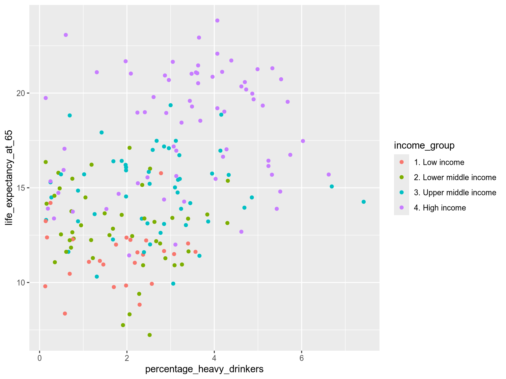
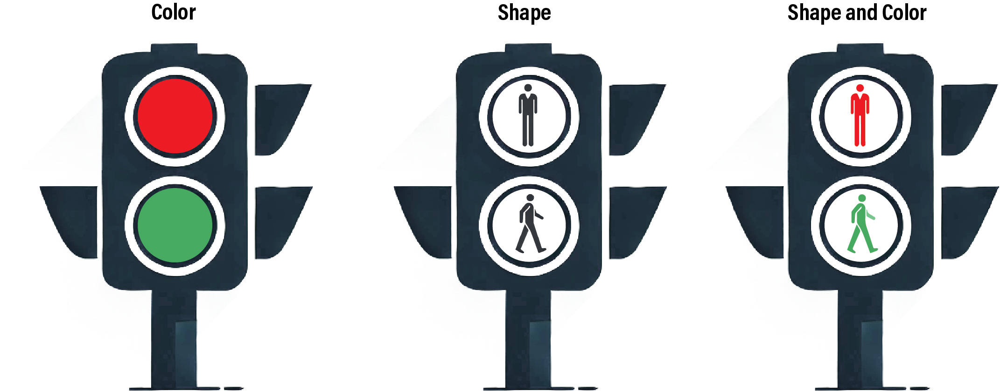
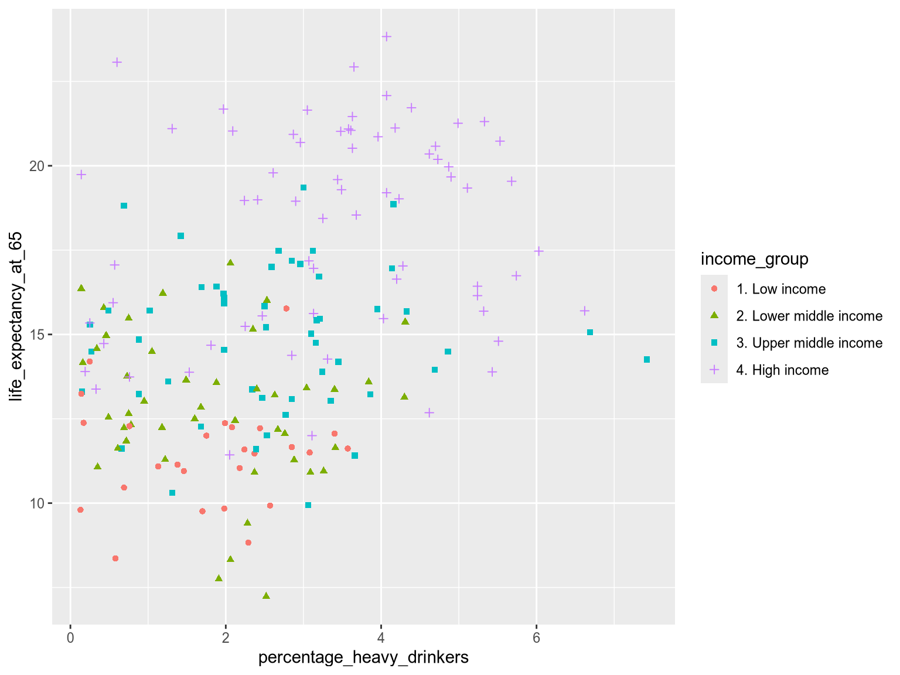
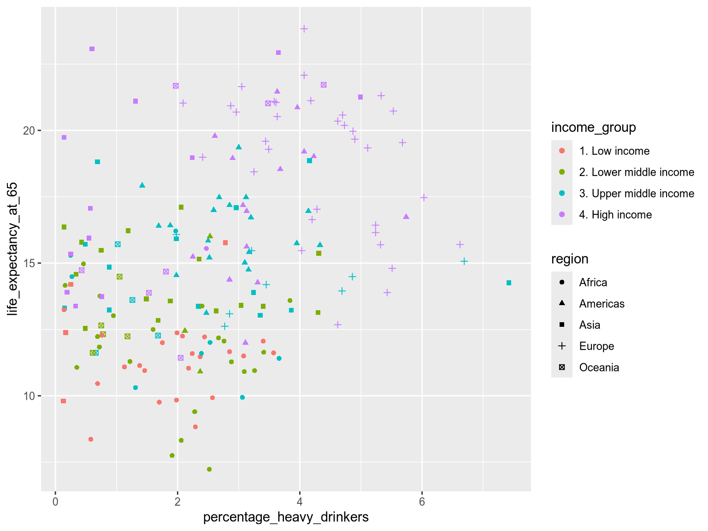
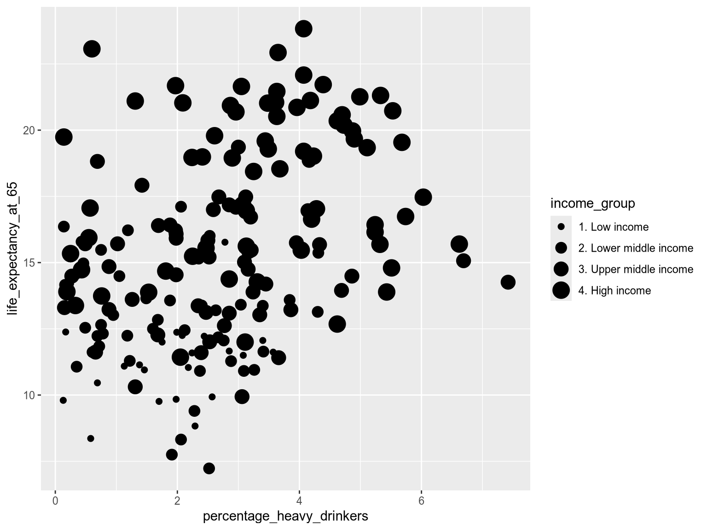
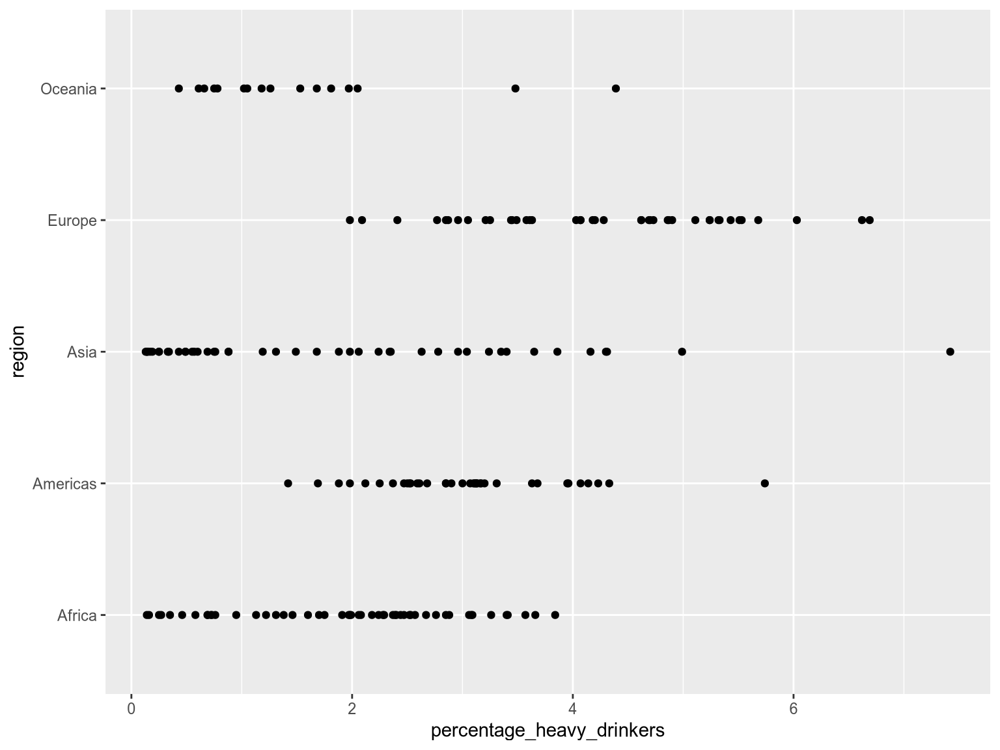
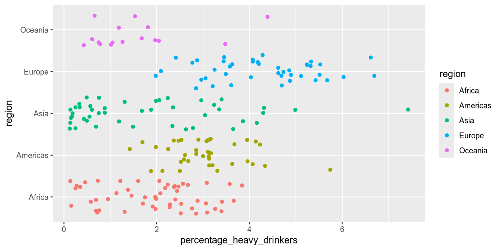
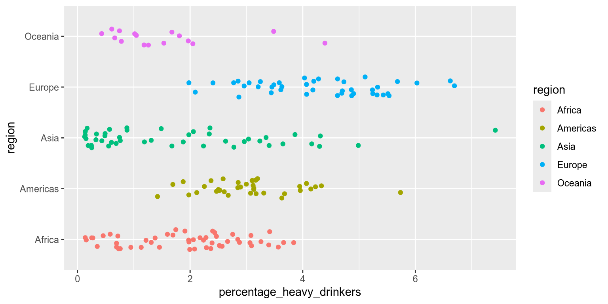
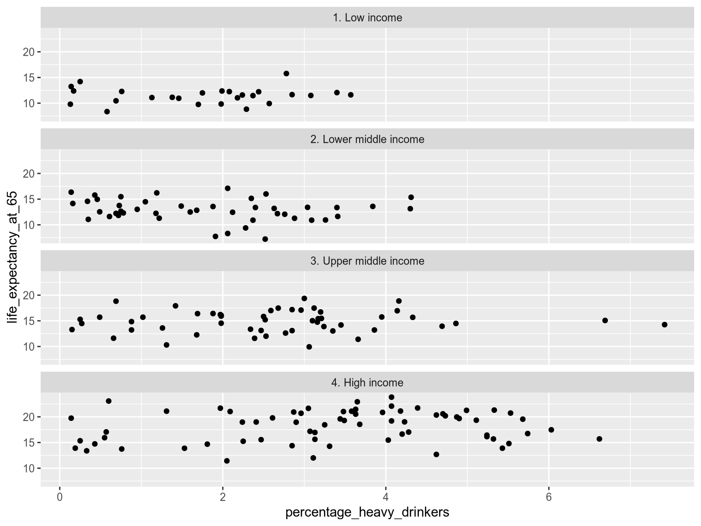

2 Grouping
Learning outcomes & Chapter summary
- Explain the two main purposes of grouping:
- Making direct comparisons between categories/groups, e.g. observations in group A tends to have higher values that those in group B.
- Avoid making incorrectly generalized conclusions, e.g. there is a general positive trend when all data is looked at together, but grouping reveals that there is actually a negative trend for each group.
- Evaluate which grouping strategy is the most suitable in a specific context.
- Position, color, shape, and size are the most effective to compare exact values between groups since they enable observations to be drawn close to each other in the same chart.
- Faceting is the most effective when compare overall patterns or trends between groups, since it shows all the values for each group separately from the other groups’ values.
- Apply grouping strategies using color, size, shape and position to visually distinguish between categories, e.g.
encode(color='category')andaes(color=category). - Apply the faceting grouping strategy via
facetandfacet_wrapmethod to split data into separate facets/subplots.
2.1 Why grouping matters
So far you have created declarative visualizations by representing them as identical point marks on a canvas with encoded x- and y-axis positions. This is the foundation for all the visualizations we will make, but it is rarely sufficient on its own to give a complete picture of the data. In particular, messy real-world data might show overall trends in the datasets, that evaporate when explored more closely. The goal of grouping is to distinguish between groups by basing the visual appearance of points in a chart on the value of categorical variable. Let’s see this in action in the following exercise.
Did the conclusions above match your expectations? Proceed to the next exercise to find out if there is more to this dataset than meets the eye!
2.2 The two main purposes of grouping
As we have seen in the exercises above, grouping can have major benefits. We can divide this benefits into to two main categories which both support us in making more accurate conclusions about our data:
- Directly compare trends and values for distinct groups.
- Reveal patterns in the data that are obscured when looking at all points together.
These main benefits are often connected and can be explored simultaneously through a common grouping strategy. The example from the exercises on alcohol consumption and life expectancy fall under the second category: the data seemed to have a certain pattern when we looked at all the points together, but when grouping by another variable in the dataset, we discovered that this overall pattern could be due to confounding from another variable (income group).
Revealing obscured patterns by grouping data is also referred to as Simpson’s Paradox; named not after Homer Simpson et al., but rather its inventor Edward H. Simpson, a British codebreaker. Simpson reported a curious phenomenon where a trend present in several different groups of data can disappear when they are combined. Below we show a more general and simplified illustration of Simpson’s Paradox than the one in our earlier exercise. Notice how the overall dataset does not have a clear direction but when you color by group, both groups exhibit the same negative trend between X and Y.
In this case, grouping makes the insidious Simpson’s Paradox visually unmistakable. This is a prime example of the utility of visualization in deepening our understanding of a data set, since without the grouping by color, we would have drawn different (and uninformative) conclusions about this data set.
An example of the first benefit, directly comparing groups, can be seen in the next chart where grouping by position on the y-axis reveals that life expectancies tend to be higher in countries belonging to the higher income groups.
While position and color are generally the most effective grouping strategies, it is important to understand the unique strengths and pitfalls of each strategy to chose the one that best supports the comparisons we want to make. This is what we will learn about next.
2.3 Strategies for grouping
The grammar of graphics gives us a convenient syntax for grouping where we define the visual channel that should represent a categorical variable. Generally speaking, position and color are the two most effective channels to use for grouping. Shape and size are also used, but often either in combination with one of the other two or for a specific purpose. The grammar of graphics allows for these to conveniently interchanged in the syntax:
encode(color='category_column')encode(shape='category_column')encode(size='category_column')encode(x='category_column')encode(y='category_column')aes(color=category_column)aes(shape=category_column)aes(size=category_column)aes(x=category_column)aes(y=category_column)Color
The human brain can detect color differences with little cognitive effort. Color is a preattentive feature3 which means that the brain can tell apart colors even without conscious attention. This is heightened when there is a high contrast, such as between the complimentary colors blue and orange.
This is great news for grouping! By encoding our categorical variable as color, we can leverage the brain’s ability to infer groups. Conveniently, color doesn’t alter the layout or structure of the data visualization, so it’s an efficient way to compare the exact values of data points between groups.
In the second exercise of this chapter we already saw how color could be used to group our life expectancy data by income group. Let’s now see what the code to create this charts looks like:
Here we use color='region':
import altair as alt
import pandas as pd
income_df = pd.read_csv('data/income_lifeexp_alcohol.csv')
alt.Chart(income_df).mark_point().encode(
x='percentage_heavy_drinkers',
y='life_expectancy_at_65',
color='income_group',
)Here we use color=region:
library(tidyverse)
income_df <- read_csv('data/income_lifeexp_alcohol.csv')
ggplot(income_df) +
aes(
x=percentage_heavy_drinkers,
y=life_expectancy_at_65,
color=income_group
) +
geom_point()
Note that the power of grouping by color fades when used irresponsibly. Using colors that are too similar can blur the difference between groups and the more colors you include, the harder it is to stick to distinct hues. The exact number of colors you can use depends on your data: if there is a lot of overlap, then it is harder to distinguish multiple colors. A helpful guideline is that around five distinct categories/colors you should consider if the visualization is still effective or if you need to break it down into multiple charts instead. Once you reach eight distinct categories/colors, it is most certainly the case that it will be hard to distinguish some groups from each other.
There are several other important aspects of using colors effectively, such as how to ensure accessibility, particularly for people with color vision deficiencies. We will learn more about the these considerations when we go in depth into color theory, including specifics around which colors are safe to use together. In that chapter we will also learn how to represent ordered categories with different color choices than unordered categories, e.g. as with the case of the income groups here.
Shape
Shape is less a effective grouping strategy on its own, but it can be combined with color to provide an additional visual cue. Let’s take a look at a classic example: the infamous traffic light.
Do you think that traffic lights are well designed? At first glance, they break a major rule of accessibility, using the worst possible color combination for people with red/green color vision deficiency. Thankfully, in many countries, traffic lights are encoded using both position (vertically along the “y-axis”), color, and shape.

Grouping by three encoding channels reinforces the visual contrast and has probably prevented many accidents. Even in traffic light signals for cars that often lack the shape encoding, the vertical positioning of the different signals is effective enough so that the lack of a shape encoding is not a major hazard.
Shape up
Some regions around the world has noticed that car traffic lights would be even safer if including shape as well, such as in this example from Nova Scotia in Eastern Canada

The syntax for encoding a shape aesthetic, is similar to that for color:
alt.Chart(income_df).mark_point().encode(
x='percentage_heavy_drinkers',
y='life_expectancy_at_65',
color='income_group',
shape='income_group'
)Setting filled=True fills all the points with a solid color, making the shapes easier to distinguish:
alt.Chart(income_df).mark_point(filled=True).encode(
x='percentage_heavy_drinkers',
y='life_expectancy_at_65',
color='income_group',
shape='income_group'
)ggplot(income_df) +
aes(
x=percentage_heavy_drinkers,
y=life_expectancy_at_65,
color=income_group,
shape=income_group
) +
geom_point()
While this combined approach makes grouping clearer, there are some pitfalls. For instance, line icons limit the total area that can be colored, reducing the impact of color. It is better to use solid shapes when combining shape and color. Additionally, smaller shapes are difficult to distinguish, so when plotting a dense scatterplot of small marks, try restricting the number of unique shapes to three or fewer, or consider avoiding using shape altogether.
It is rarely effective to encode a different data variable in the color and shape channels. This tends to lead to too much visual information and it is difficult to distinguish the many different combinations visually.
The many combinations of income group and region in this chart are hard to separate visually, which makes this chart ineffective:
alt.Chart(income_df).mark_point(filled=True).encode(
x='percentage_heavy_drinkers',
y='life_expectancy_at_65',
color='income_group',
shape='region'
)The many combinations of income group and region in this chart are hard to separate visually, which makes this chart ineffective:
ggplot(income_df) +
aes(
x=percentage_heavy_drinkers,
y=life_expectancy_at_65,
color=income_group,
shape=region
) +
geom_point()
Caution
Avoid using color and shape for different variables since the combination can be difficult to distinguish
Size
Size is often used to represent the magnitude of quantitative data. But it can under limited circumstances be used for grouping. Size has an inherent direction from small to large, so it works better for ordered categorical data. One example is World Bank income level, ranging from low to high. In the next chart you can see that it is notably more difficult to tell apart the four different sizes, than the four different colors in the previous chart.
alt.Chart(income_df).mark_point().encode(
x='percentage_heavy_drinkers',
y='life_expectancy_at_65',
size='income_group',
)ggplot even displays a warning to be cautious when using size for categorical variable.
ggplot(income_df) +
aes(
x=percentage_heavy_drinkers,
y=life_expectancy_at_65,
size=income_group,
) +
geom_point()Warning: Using size for a discrete variable is not advised.
Caution
In general, size-based groupings can be difficult to distinguish, even when used for ordinal categories as above. Restricting size to four or fewer levels is a good rule of thumb, and for most visualizations grouping by size should be avoided in favor of more effective channels such as position and color.
Position
Grouping by position creates the clearest separation between groups. Most commonly when using positions, the categorical variable is distributed along the x or y axis. This gives each group its own visual lane, making it easier to compare overall distributions across categories.
Below, we distribution the groups along the y-axis to compare heavy alcohol consumption across income groups:
alt.Chart(income_df).mark_point().encode(
x='percentage_heavy_drinkers',
y='region',
)ggplot(income_df) +
aes(
x=percentage_heavy_drinkers,
y=region,
) +
geom_point()
Notice how easy it is to compare the distributions between regions? This is because the separation between the groups is much clearer when using distinct positions than when using distinct colors, shapes, or sizes for points with overlapping positions. However, since the the categorical variable now occupies one of the axes, we can not use position-based grouping when we are interesting in visualizaing a pairwise relationships between two continuos variables as we did in the first few exercises.
Note
If we are interested in comparing groups for a single continuous variable (such as percentage_heavy_drinkers above), position is often the most effective grouping method. If we are interested in comparing groups while visualizing a pairwise relationship between two continuous variables
Another caution when using position for grouping, is that plotting data points along a single axis can lead to overlap. That’s where jittering comes to the rescue. Jittering introduces slight variation, or ‘jitter’, in the position of data points in each lane, making them easier to see.
Jitterbug
Back in the 1930s, the jitterbug was a lively, often wild, dance style that matched the fast-paced, unpredictable energy of swing music. In data visualization, jittering serves a similar purpose: to add a touch of randomness to points in a plot.

Let’s examine how jittering works.
In Altair, we create a random calculated variable called jitter by appending the .transform_calculate() method to our chart. We use our newly created jitter variable, encoding it as the yOffset of each data point using yOffset='jitter:Q'. This shifts the yOffset of each point by a random value. The :Q tells Altair that jitter is a continuous quantitative variable, which we need since it is not part of the pandas dataframe, so the data type can’t be inferred from the data frame.
alt.Chart(income_df).mark_point().encode(
x='percentage_heavy_drinkers',
y='region',
color='region',
yOffset="jitter:Q"
).transform_calculate(
jitter="random()"
)In ggplot2, you can jitter points by using the geom_jitter, which is a combination of geom_point together with a function called position_jitter.
ggplot(income_df) +
aes(
x=percentage_heavy_drinkers,
y=region,
color=region
) +
geom_jitter()
ggplot(income_df) +
aes(
x=percentage_heavy_drinkers,
y=region,
color=region
) +
geom_jitter(height=0.2)
Caution
Jittering can be confusing! It can easily be mistaken for a scatterplot with true variation in the underlying data.
By separating the points through jittering, we make it easier to distinguish individual data points. This clarity allows us to add additional grouping, such as color. By coloring our jittered data points as a second categorical variable, we can highlight a secondary grouping. This allows us to better understand complex relationships and interpret multiple levels of comparison in the data.
When grouping by two categorical variables, which should you assign to position and which to color? Position is more visually obvious than color. This means that we assign our primary comparison to position and our secondary comparison to color.
Let’s apply this to a real world example.
Faceting
Faceting takes the concept of grouping to the next level. Instead of using different visual elements within a single chart, it generates multiple small charts, each dedicated to a grouped subset of the data. Faceting is particularly effective for highlighting distinct trends and patterns in each subset, as well as identifying extreme values or outliers within groups. We could think of faceting as a type of position grouping, but its advantage is that it keeps both the x and y axis free for other variables.
Let’s check out the syntax:
To facet by income group, we can append .facet('income_group') to our chart. When we are faceting the xy-axes are the same for all the grouped facets/subcharts. The default layout in Altair is to have single row with all the charts spread out horizontally. This would make it easy to compare the charts’ y-axis, since they would all be aligned. If we instead are the most interested in comparing the values on the x-axis, we could spread the charts out vertically in a single column. Here, we don’t have an explicit primary comparison, but we show how to change from the default horizontal layout by using the columns parameter.
alt.Chart(income_df).mark_point().encode(
x='percentage_heavy_drinkers',
y='life_expectancy_at_65',
).facet(
'income_group',
columns=1
)In addition to faceting on a single variable in the data, faceting can also be done over two variables: one spread horizontally and one spread out vertically in the faceted charts. In Altair, we would use the column and row parameter in order to achieve this. For example, to have facets that are grouped by both income group and region, we could use facet(column='income_group', row='region'). This can be effective when we need to group our data further, but it does risk making the chart hard to overview, so it is best used when there are fewer categories in the faceting variables.
To facet by income group, we can append .facet_wrap(vars(income_group)) to our chart. The vars function is required for facet_wrap to understand that we are referring to column names just like aes is required when typing out column names for the different visual channels.
When we are faceting the xy-axes are the same for all the grouped facets/subcharts. The default layout in ggplot is to achieve and even number of columns and rows. This is good when we are low on space, but otherwise it is preferred to spread the charts out horizontally in a single row if the primary purpose was to compare the charts’ y-axis, since they would all be aligned, or vertically in a single column if we are the most interested in comparing the groups in terms of the values on the x-axis. Here, we don’t have an explicit primary comparison, but we show how to change from the default horizontal layout by using the ncol parameter.
ggplot(income_df) +
aes(
x = percentage_heavy_drinkers,
y = life_expectancy_at_65
) +
geom_point() +
facet_wrap(vars(income_group), ncol=1)
In addition to faceting on a single variable in the data, faceting can also be done over two variables: one spread horizontally and one spread out vertically in the faceted charts. In ggplot, we would swap out facet_wrap to facet_grid in order to do this. For example, to have facets that are grouped by both income group and region, we could use facet_grid(vars(income_group), vars(region)). This can be effective when we need to group our data further, but it does risk making the chart hard to overview, so it is best used when there are fewer categories in the faceting variables.
As you can see above, faceting makes it easy to observse the overall shape of the distribution for each income group and how tightly clustered the values are. It also reveals potential outliers in the Upper Middle Income facet – we can easily spot two countries with a higher percentage of heavy drinkers. On the other hand, it is now harder to compare the exact values between two groups because the points are spread out in different charts, instead of right next to each other in a single chart.
All the previous grouping strategies that we have discussed can be utilized within each facet as additional layers of grouping. This nested grouping can be powerful to stratify our data according to multiple categorical variables, but keep in mind that it can become confusing if we try to fit too much into a single visualization. Exactly how many levels of grouping you can use depends on how well separated your data is and how many observations you have; more observations and less separation between groups means that you will have to be more careful and use less levels of grouping to keep the visualization easy to interpret.
Let’s try out an example of how we can use faceting together with other grouping strategies.
2.4 Deep dive
2.5 Mission
Viridians pride themselves on being part of the #1 Happiest Colony in the Galaxy. They have won medals and trophies for it. But this year is extremely competitive. To make sure they come out on top, Viridians are investigating the history of mental wellbeing on Earth.
You will be working with Grumble Thorax, a seasoned Happiness Compliance Officer.
Ministry of Wellbeing
Grumble Thorax
Position
Happiness Compliance Officer
Department
Wellbeing and Flourishing
ID Number
EI-2024-2313
Clearance
Level 3
Exercise 5
Grumble Thorax has discovered an ancient document called ‘Mental State of the World Report 2024’.4 Its creators asked hundreds of thousands of Earthlings about their mental wellbeing. Each age_group within each country received an average mental health quotient score (MHQ_score) - the higher number, the better wellbeing.
We also have a categorical variable for the world region.
| country | age_group | MHQ_score | region | |
|---|---|---|---|---|
| 0 | Algeria | 18-24 | 33.435450 | Africa |
| 1 | Angola | 18-24 | 38.537090 | Africa |
| 2 | Argentina | 18-24 | 26.334338 | Americas |
| ... | ... | ... | ... | ... |
| 473 | Venezuela | 75+ | 117.085094 | Americas |
| 474 | Yemen | 75+ | 117.402423 | Asia |
| 475 | Zimbabwe | 75+ | 84.497222 | Africa |
476 rows × 4 columns
Before you start your analysis, Grumble Thorax has some questions for you.
It’s time to use everything you’ve learnt in this chapter.
Create a visualization comparing how mental wellbeing varies across age groups within each region. You should use a combination of faceting, position and color.
Great work! Now create the opposite visualization, comparing how mental wellbeing varies across regions within each age group.
Solution
ggplot(wellbeing_df) +
aes(
x = region,
y = MHQ_score,
color = region
) +
geom_point() +
facet_wrap(~ age_group)
It’s time to report your findings back to Grumble Thorax…
Source: Global Burden of Disease Study 2021 (GBD 2021) Results; The World Bank https://datahelpdesk.worldbank.org/knowledgebase/articles/906519-world-bank-country-and-lending-groups↩︎
Retirement age differs between countries. We have used age 65 as it is close to the average in OECD countries. https://www.oecd-ilibrary.org/docserver/9bf0cb7f-en.pdf↩︎
Wolfe JM, Utochkin IS. What is a preattentive feature? Curr Opin Psychol. 2019 Oct;29:19-26. doi: 10.1016/j.copsyc.2018.11.005. Epub 2018 Nov 13. PMID: 30472539; PMCID: PMC6513732.↩︎
Source: Sapien Labs (2024): https://sapienlabs.org/whats_new/sapien-labs-releases-the-4th-annual-mental-state-of-the-world-report/↩︎